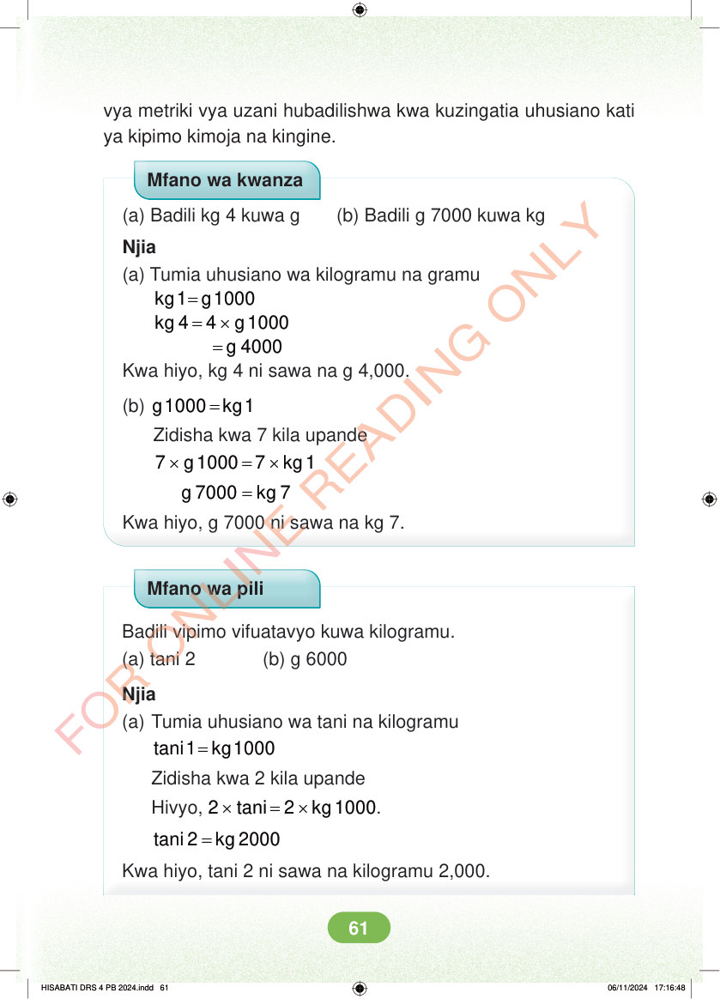

vya metriki vya uzani hubadilishwa kwa kuzingatia uhusiano kati ya kipimo kimoja na kingine. Mfano wa kwanza (a) Badili kg 4 kuwa g (b) Badili g 7000 kuwa kg Njia (a) Tumia uhusiano wa kilogramu na gramu = kg 1 g 1000 = × kg 4 4 g1000 = g 4000 Kwa hiyo, kg 4 ni sawa na g 4,000. (b) = g 1000 kg 1 Zidisha kwa 7 kila upande × = × 7 g1000 7 kg1 = g 7000 kg 7 Kwa hiyo, g 7000 ni sawa na kg 7. Mfano wa pili Badili vipimo vifuatavyo kuwa kilogramu. (a) tani 2 (b) g 6000 Njia (a) Tumia uhusiano wa tani na kilogramu = tani 1 kg 1000 Zidisha kwa 2 kila upande Hivyo, × = × 2 tani 2 kg1000. = tani 2 kg 2000 Kwa hiyo, tani 2 ni sawa na kilogramu 2,000. HISABATI DRS 4 PB 2024.indd 61 HISABATI DRS 4 PB 2024.indd 61 06/11/2024 17:16:48 06/11/2024 17:16:48